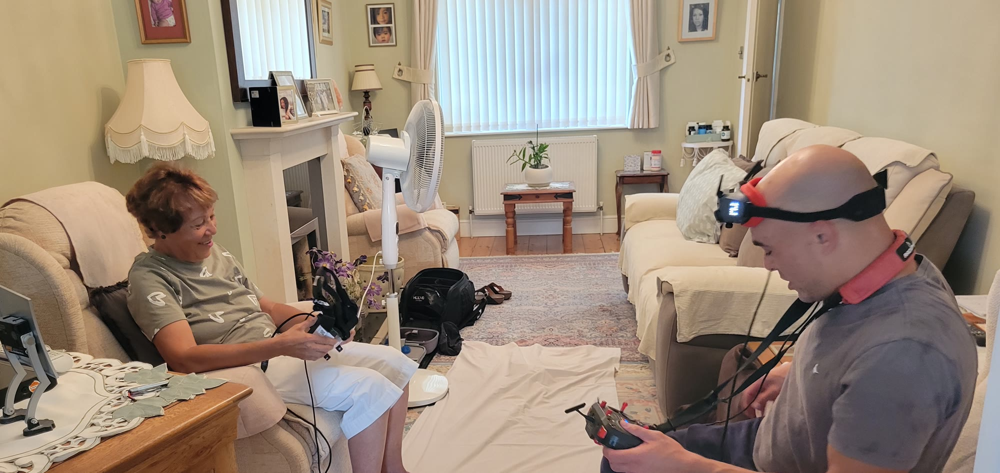
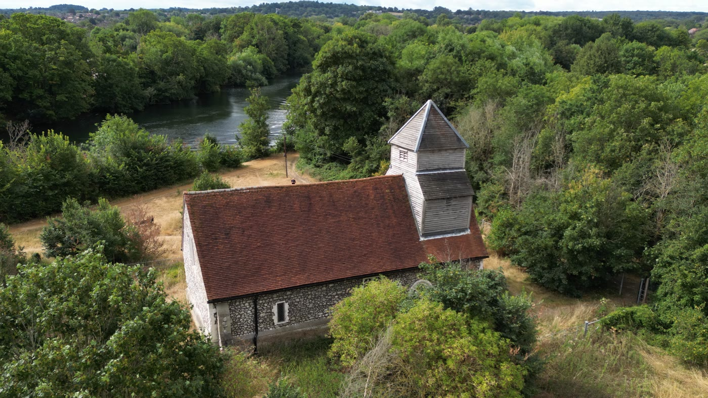
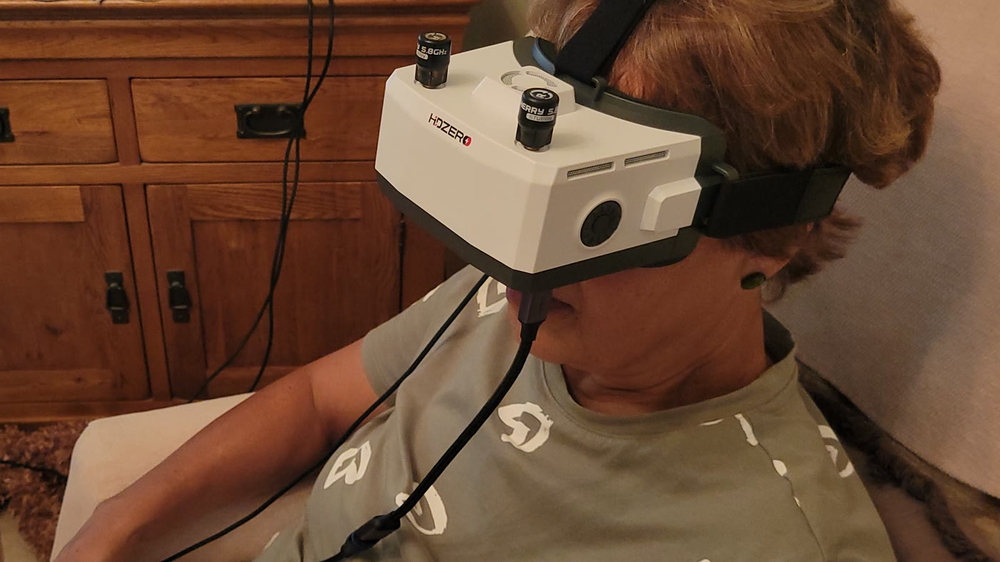

Virtual Drone Experience · care homes & community groups · Berkshire · Bucks · Oxon
Flight, brought into the room.
A live drone's-eye session for people who will never fly one themselves. Not a film on a screen — the aircraft is in the room, flying now, and the residents can see themselves in it, waving back from above.

What happens
Three parts, and the room sets the pace.
Built around the home's normal activity slot, and shaped with the coordinator beforehand rather than on the day. Everything is slow, level and announced before it happens.
The aircraft in the room
A small indoor drone, hovering, close enough to see properly — and the view from its camera live on the big screen. Residents look up at it, then look across at themselves from above, and wave. A recording cannot do this. It is the whole reason the session is live.
Out the window
Where the grounds and the weather allow, the view goes outside: over the garden, up, and there is the building from above — there is your window, the bench by the path, the road you came in on. Their own place, from a viewpoint nobody in the room has ever had of it.
The goggles
Optional, one resident at a time, seated, for half a minute or so — the view filling their whole vision while the room carries on watching the screen. The big bright screen is the main event; the goggles are the extra for whoever wants them.


How it is run
The care part is the specification, not a preference.
This is a room of seated, often frail people, and a pilot who is concentrating. Every one of these is fixed procedure, not something decided on the day.
- A member of staff spots, with one word. One person watches the room and the aircraft, and says stop. The pilot cuts power. It is agreed and rehearsed before anything takes off.
- Nothing moves without being announced. Slow, level, wide, long holds, horizon flat. No dives, no fast turns. Motion that is announced does not disorient; motion that arrives unannounced does.
- Goggles are always seated, always brief, always optional. They go over most spectacles, the fit is adjusted in seconds, and a staff hand on the shoulder stays there throughout. Anyone who would rather just watch the screen watches the screen.
- Infection control is brought with us. Single-use hygienic face masks per resident, alcohol wipes on the goggles between turns, hand sanitiser.
- Consent and capacity stay with the home. The home decides who takes part, and cameras stay off residents' faces unless the home has cleared it.
- The screen comes with us too. Lounge TVs are wall-mounted, the input is locked or the remote is missing. Yours is used if it works and ours is set up if it does not, so a screen is never what stops the session.
Practical
What is needed, and what is brought.
A lounge or activity room, a mains socket, and a coordinator who knows which residents would enjoy it. The room size, screen, input and socket are confirmed in advance by phone — never discovered on arrival.
Aircraft, screen, goggles, cabling, hygiene kit — and arrival 45 to 60 minutes early to set up and walk the room quietly before anyone comes in.
Based in Slough. Within an hour: Berkshire, Buckinghamshire, Oxfordshire, Surrey and Greater London. Further afield by arrangement.
- Sessions
- Quoted per home
- Qualification
- GVC · CAA authorised
- Public liability
- £10m
- Enhanced DBS
- Applied for
Getting a session in the diary
A phone call is usually faster than a form.
Tell me the home, roughly how many residents, and the activity slot you have in mind, and you will get a straight answer the same day — including if it is not right for your room. Sessions are quoted per home; ask and you get a figure, not a brochure.
Here for the survey side?
Parallax Aerial also flies monthly construction progress records — the same mission every visit, orthomosaic and a month-to-month comparison. Different work, same aircraft discipline, and it lives on the home page.